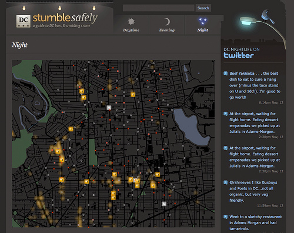

Welcome
HyperIsland Data Hackfest
By Digital Data Strategists
Housekeeping
Bathrooms
Wifi
Hack01
Hack02
Exits
Food
Write your name on the cup
Tags
Lunch
6:00pm celebrations
Edward Ocampo-Gooding
@edwardog
Daniel Beauchamp
@pushmatrix

Open Data Ottawa
Canada, eh?

Ottawa
Lumberjacks
Beavers

Maple Syrup

Today
Open Data
WTF?
Raw Data

http://live.transloc.com/
Stumble safely
Dog park finder

MBTA Visualizations